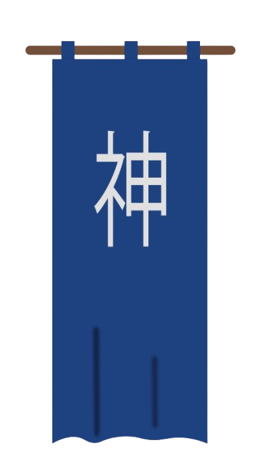
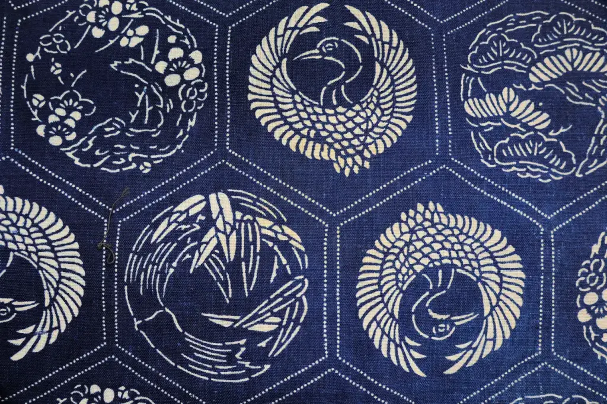
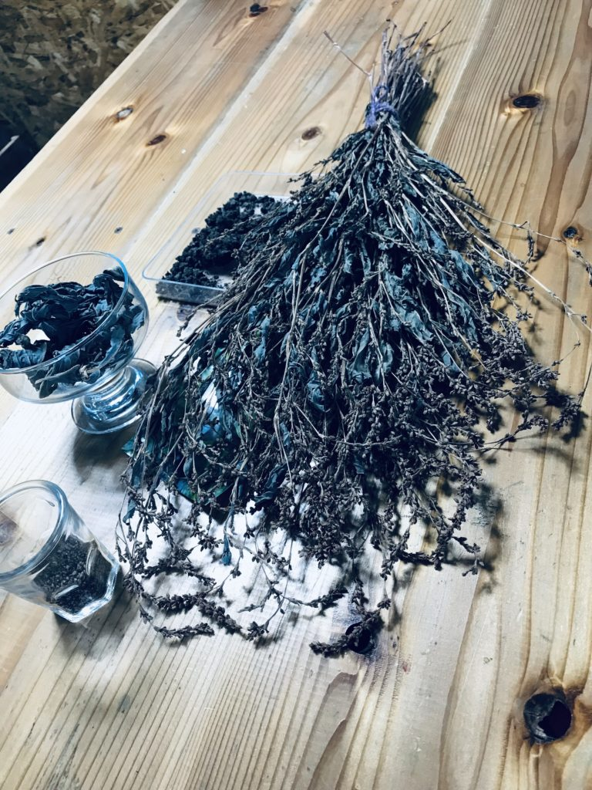
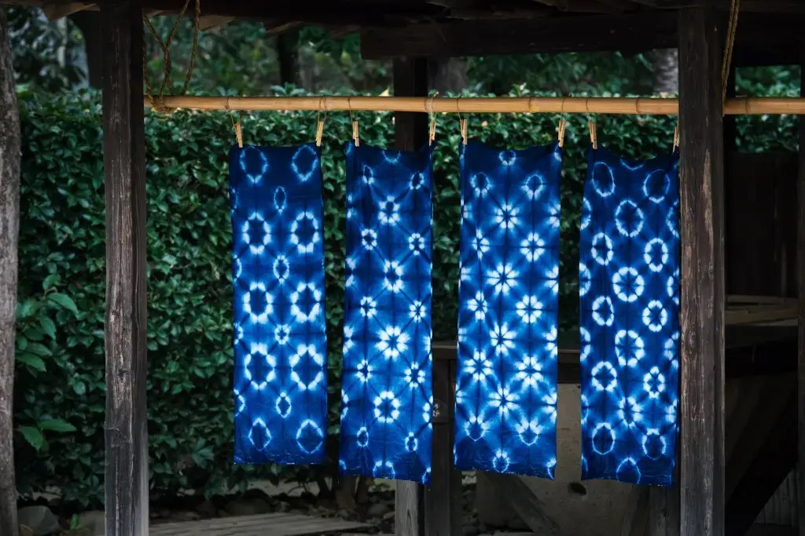

Aizome es la tecnica de estampacion tradicional japonesa es el color distintivo y omnipresente aproximadamente 800 años atras El Aizome, era propiamente usado en los tejidos teñidos de este azul tradicional por la aristocracia y por samurais.

Esta tecnica de estampación del Aizome es natural, es decir, el color obtenido es tan puro, debido a que se produce gracias a la planta llamada Pesicaria Tintora, esta planta es cultivada, luego cosechada y tratada por medio de un proceso de fermentación de las hojas. De esta planta se extrae el colorante natural, lo que da como resultado una calidad superior a la hora de teñir las prendas.

"Aizome no solo es hermoso, sino también funcional. El tinte fortalece la tela, resiste a los insectos y tiene cualidades antibacterianas. Los agricultores y jardineros usaban prendas de índigo para mantener alejadas a las plagas, especialmente durante los veranos calurosos. " Fang, T. (Sakuraco, s.f.)